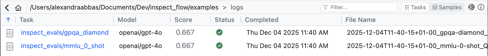
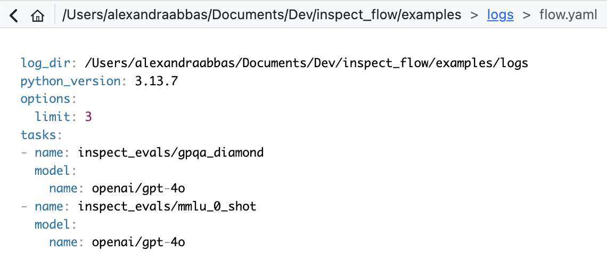

Running Flows
Once you’ve defined your Flow configuration, you can execute evaluations using the flow run command. Flow also provides tools for previewing configurations and controlling runtime behavior.
The flow run Command
Execute your evaluation workflow:
flow run config.pyWhat happens when you run this:
- Flow loads your configuration file
- Creates an isolated virtual environment
- Installs dependencies
- Resolves all defaults and matrix expansions
- Executes evaluations via Inspect AI’s
eval_set() - Stores logs in
log_dir - Cleans up the temporary environment
Common CLI Flags
Preview without running:
flow run config.py --dry-runShows the completely resolved configuration:
- Creates virtual environment
- Applies all defaults
- Expands all matrix functions
- Instantiates all Python objects
This is invaluable for debugging what settings will actually be used in your evaluations.
Override log directory:
flow run config.py --log-dir ./experiments/baselineChanges where logs and results are stored.
Runtime overrides:
flow run config.py \
--set options.limit=100 \
--set defaults.config.temperature=0.5Override any configuration value at runtime. See CLI Overrides for more details.
The flow config Command
Preview your configuration before running:
flow config config.pyDisplays the parsed configuration as YAML with CLI overrides applied. Does not create a virtual environment or instantiate Python objects.
flow config- Quick syntax check, verify overridesflow run --dry-run- Debug defaults resolution, inspect final settingsflow run- Execute evaluations
Running from Python
You can run Flow evaluations programmatically using the Python API:
run.py
from inspect_flow import FlowSpec, FlowTask
from inspect_flow.api import run
spec = FlowSpec(
log_dir="logs",
tasks=[
FlowTask(
name="inspect_evals/gpqa_diamond",
model="openai/gpt-4o",
),
FlowTask(
name="inspect_evals/mmlu_0_shot",
model="openai/gpt-4o",
),
],
)
run(spec=spec)The inspect_flow.api module provides three functions:
- run() - Execute a Flow spec with full environment setup (equivalent to
flow run) - load_spec() - Load a Flow configuration from a Python file into a FlowSpec object
- config() - Get the resolved configuration as YAML (equivalent to
flow config)
See the API Reference for detailed parameter documentation.
Results and Logs
Logs Directory
Evaluation results are stored in the log_dir:
logs/
├── 2025-11-21T17-38-20+01-00_gpqa-diamond_KvJBGowidXSCLRhkKQbHYA.eval
├── 2025-11-21T17-38-20+01-00_mmlu-0-shot_Vnu2A3M2wPet5yobLiCQmZ.eval
├── .eval-set-id
├── eval-set.json
├── flow.yaml
├── flow-requirements.txt
└── ...Directory structure:
- Flow passes the
log_dirdirectly to Inspect AIeval_set()for evaluation log storage - Inspect AI handles the actual evaluation log file naming and storage
- Log file naming conventions follow Inspect AI’s standards (see Inspect AI logging docs)
- Flow automatically saves the resolved configuration as
flow.yamlin the log directory - Flow saves the exact version of packages installed in the virtual environment as
flow-requirements.txt - The
.eval-set-idfile contains the eval set identifier - The
eval-set.jsonfile contains eval set metadata
Log formats:
.eval- Binary Inspect AI log format (default, high-performance).json- JSON format (iflog_format="json"in FlowOptions)
Viewing Results
Using Inspect View:
inspect viewOpens the Inspect AI viewer to explore evaluation logs interactively. Inspect View can automatically detect Flow config files in the log directory and render them in the UI, making it easier to review the spec for the evaluations.
Click the Flow icon in the top right hand corner to view the Flow config.

The Flow config file is rendered in YAML format.

S3 Support
Store logs directly to S3:
FlowSpec(
log_dir="s3://my-bucket/experiments/baseline",
tasks=[...]
)For more information on configuring an S3 bucket as a logs directory, refer to the Inspect AI documentation.